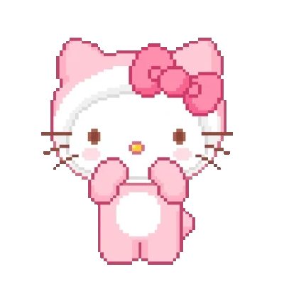
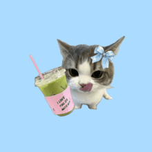
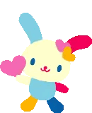
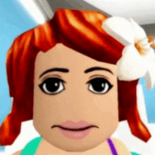

Small Details About You

One of the first things I noticed about you was how much you seem to love the color pink. Whether it's something you wear or things you choose, I like how it suits your personality.

I know you how much you love cats. Every time I see anything related to cats, it somehow reminds me of you because of how much you seem to adore them.

I remember seeing on your stories with your friend that you drink matcha too. It's such a random little detail, but it's one of those things that stuck with me.

you really love cute things. There's something about the things you like that gives off a soft vibe to you I also remembered your tiktok bio "I love usahana".

You really love playing Roblox. Seeing you online playing from time to time made me realize that even the simple things you do catch my attention:)